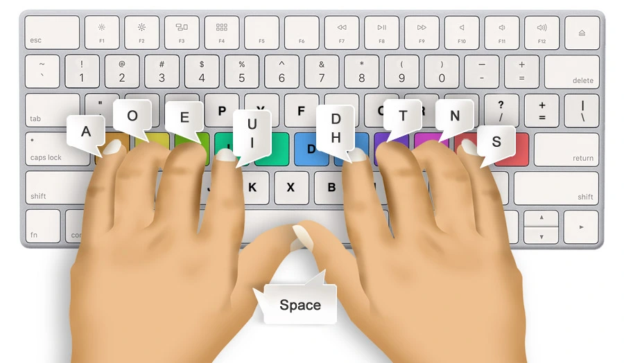

TYPING TEST
Believe you can and you're halfway there.
Your Reliable Partner for Typing Test Exams
Precision Testing
Our typing test is carefully crafted to determine the typing speed and accuracy of candidates.
Reliable Index:
Provides a reliable index of critical typing competencies in the digital age.
Versatile Applications:
Caters to various needs, from recruitment to specialized skill verification.
Uniform Benchmark
Brancize Technology Private Limited provides a fair and uniform standard for determining typing proficiency.
How does Typing Test Work?
At Brancize Technology Private Limited, we recognize the
pivotal role of typing skills and are dedicated to offering a
streamlined, dependable, and fortified solution for administering
Typing Test assessments. Our Typing Test is offering
user-friendly, efficient, and secure examination
experience.
Here’s how our process works:
Here’s how our process works:
Registration:
For the process of online registration, they need to submit
their personal and professional information to initiate the
evaluation.
Language:
Select the desired language for the typing assessment.
Scheduling:
Subsequently, they choose a date and time that best suits their
schedule for the examination.
Instruction:
Detailed and straightforward instructions are provided to
facilitate an effortless initiation of the assessment.
Speed and Accuracy Evaluation
The platform meticulously evaluates the typing for both speed
and precision.
Submission:
After completing their task, our system submits it within the
specified time frame
Learning and Improvement
After receiving the data, our system can use it to improve
typing efficiency and acquire new perspectives.

Why typing test is beneficial?
Typing tests are beneficial as they measure typing speed and accuracy, essential skills in the digital age. They help employers assess potential hires and employees, ensuring efficient data entry and communication. Improved typing skills enhance productivity and reduce errors, making them valuable for both personal and professional development.
Let's begin with Brancize Technology Private Limited
Brancize Technology Private Limited is helpful for typing tests. It provides simplicity, reliability, and security for typing assessments. It improves your typing speed and enhances your typing skills.